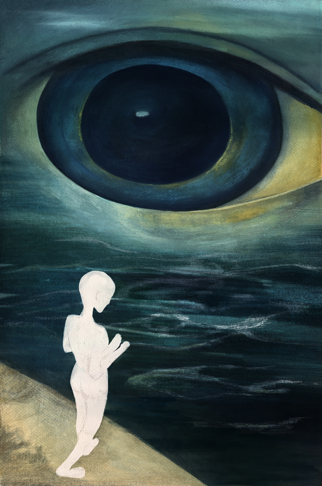
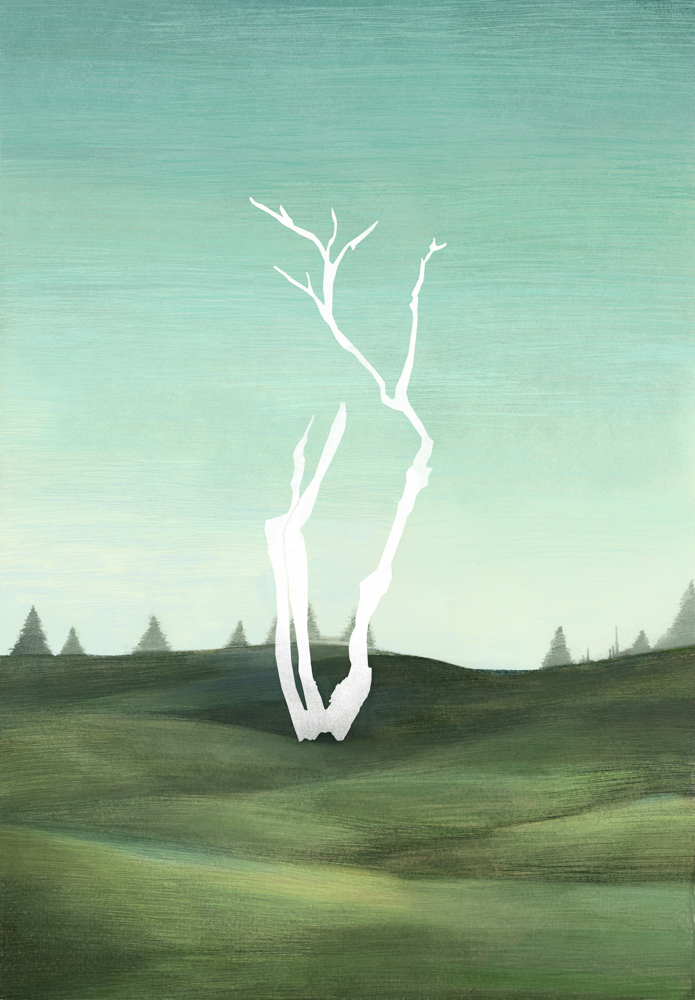
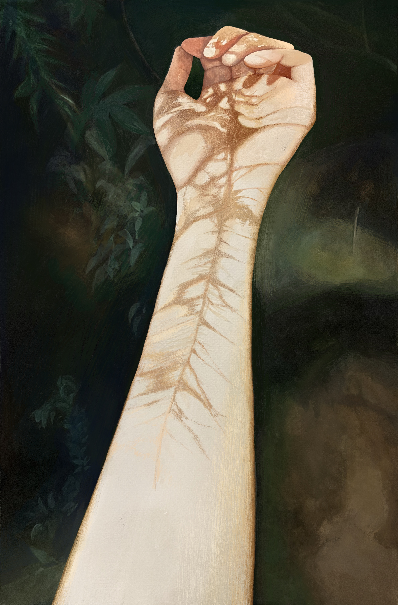
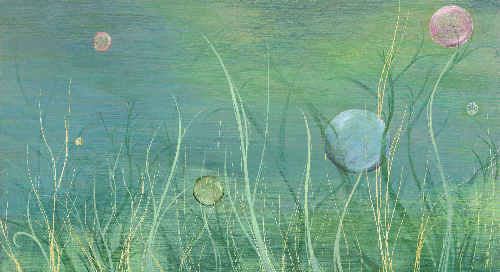
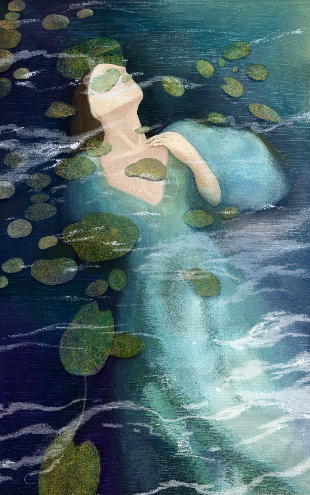
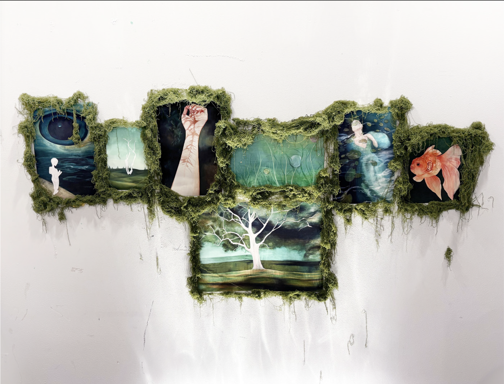

The other form of emotions

Work Introduction
This project centers on thewater-soluble essence ofemotions and the transformationof life energy, delving into the subtle, intrinsic connectionbetween our inner emotionalworld and the natural ecosystem.I have long held the belief thatemotions are inherentlywater-soluble carriers of energy-they are not merelyfleeting, intangible psychologicalfluctuations, but tangible lifeexperiences that can dissolve inwater. These emotional energiesflow naturally out of the body inthe form of tears, sweat, andother bodily fluids, allowing for thegentle release and gradualseparation of accumulatedfeelings.l incorporated elements such as fish, trees,water, and eyes into my artworks. Imetaphorically compare tree branches to theblood vessels within the human body: water andblood flowing through us carry away ouremotions, and eventually,both positive and negative feelings circulate intonature as a form of energy, nurturing trees togrow silently into towering giants-from whichwe once again find peace and tranquility.






